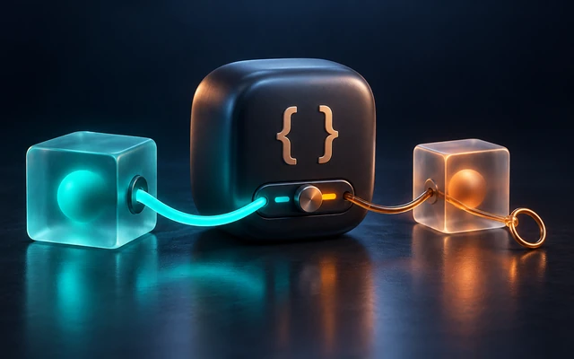

A capture list is the small bracketed section at the start of a closure, like [weak self] or [count]. It controls how a closure captures the values it uses: by reference or by value, strongly or weakly, under the original name or a new one. It’s a tiny piece of syntax with a big influence on both correctness and memory, and it’s where most closure-related bugs in iOS apps are fixed or created.

Capture Lists in Swift Closures
What closures capture by default
Without a capture list, a closure captures variables, not their current values. It sees changes made after it was created, and changes it makes are visible outside:
var counter = 0
let printCounter = {
print("counter is \(counter)")
}
counter = 5
printCounter() // counter is 5, not 0
Under the hood, a captured local var is moved into a small heap-allocated box, shared by the function and every closure that captures it. That’s how the closure can see later changes, and how the variable outlives the scope that declared it.
Capturing a value: [x]
List a variable in the capture list, and the closure copies its value at the moment the closure is created:
var level = 0
let printLevel = { [level] in
print("level is \(level)")
}
level = 5
printLevel() // level is 0: the value when the closure was created
The captured copy is a constant inside the closure. Trying to change it is a compile error:
var total = 1
let addOne = { [total] in
// total += 1 // ❌ left side of mutating operator isn't mutable: 'total' is an immutable capture
print(total + 1)
}
addOne()
Snapshot captures are useful whenever a closure should use the state “as of now”: the current page number when you schedule a request, the item that was selected when an animation started, or loop state captured into a deferred task.
You can also capture an expression under a new name, which evaluates it once, at creation:
let names = ["Ana", "Ben"]
let describe = { [count = names.count] in
print("There were \(count) names")
}
describe()
Value types vs. reference types in capture lists
What a capture list copies depends on the type:
- For a struct,
[point]copies the whole value. Later changes to the original don’t affect the closure’s copy. - For a class instance,
[object]copies the reference. The closure still sees changes to the object’s properties; it just keeps pointing at the same object even if the variable is reassigned later. And it keeps that object alive.
That second point is where memory management comes in.
Strong captures and retain cycles
Captures of class instances are strong by default: as long as the closure exists, the captured object exists. That’s usually exactly what you want for short-lived closures. The danger is a retain cycle: an object owns a closure, and the closure owns the object.
final class LeakyTicker {
var tick: (() -> Void)?
var seconds = 0
func start() {
tick = {
self.seconds += 1 // the closure retains self, and self retains the closure
}
}
deinit {
print("LeakyTicker freed") // never printed after start() is called
}
}
Once start() runs, nothing can ever free the ticker or its closure, even after the rest of the app forgets about it. One leaked ticker is harmless; one leaked view controller per screen visit, each holding its images and data, eventually gets the app terminated.
[weak self]
A weak capture doesn’t keep the object alive. Inside the closure, the captured name becomes an optional that turns nil when the object is freed:
final class Ticker {
var tick: (() -> Void)?
var seconds = 0
func start() {
tick = { [weak self] in
guard let self else { return } // the object may already be gone
self.seconds += 1
}
}
deinit {
print("Ticker freed")
}
}
var ticker: Ticker? = Ticker()
ticker?.start()
ticker?.tick?()
print(ticker?.seconds ?? 0) // 1
ticker = nil // Ticker freed
After guard let self, self is a strong reference again, for the rest of that run of the closure, so the object can’t disappear halfway through. (The guard let self shorthand, without = self, is new in Swift 5.7.)
Two patterns are both common:
guard let self else { return }when the closure’s work only makes sense if the object exists. It reads top to bottom and avoids repeatingself?.on every line.self?.doSomething()for one-liners where “do nothing if it’s gone” is the right behavior.
[unowned self]
An unowned capture also doesn’t keep the object alive, but it isn’t optional. It’s a promise that the object will outlive the closure. If the promise is broken, accessing it stops the app with a fatal error:
final class Form {
private var onSubmit: (() -> Void)?
var title = "Sign up"
init() {
onSubmit = { [unowned self] in
print("Submitting \(self.title)")
}
}
func submit() {
onSubmit?() // only ever called while self is alive, inside its own method
}
}
Form().submit() // Submitting Sign up
Here the closure is private to the Form and only called from inside one of its methods, so self is guaranteed to be alive whenever it runs. That’s the narrow case where unowned is safe: the closure can’t outlive its owner by construction.
It’s easy to break that guarantee by accident. If onSubmit were a public property, Form().onSubmit?() would crash: the temporary Form is released right after its onSubmit property is read, before the closure runs, so the closure’s unowned reference points at a destroyed object. Swift only promises an object lives until its last use, and reading the property was the last use.
When in doubt, use weak. The cost is an unwrap; the cost of a wrong unowned is a crash, often in a code path you didn’t test, like a network response arriving after the user left the screen.
Capturing several things, and renaming
A capture list can hold several entries, each with its own rule, and can give captures new names:
protocol Listener: AnyObject {
func heard(_ sound: String)
}
final class Ear: Listener {
func heard(_ sound: String) { print("heard \(sound)") }
deinit { print("Ear freed") }
}
final class Microphone {
weak var listener: Listener?
var onSound: ((String) -> Void)?
func wire() {
// Capture just the listener, weakly, under a short name. The closure never touches self.
onSound = { [weak listener = self.listener] sound in
listener?.heard(sound)
}
}
}
var ear: Ear? = Ear()
let microphone = Microphone()
microphone.listener = ear
microphone.wire()
microphone.onSound?("hello") // heard hello
ear = nil // Ear freed
microphone.onSound?("again") // nothing: the weak capture became nil
Capture what you need, not self
Often the cleanest fix for a cycle is not to capture self at all, but the specific values or objects the closure needs:
final class Logger {
func log(_ message: String) { print("LOG: \(message)") }
}
final class Screen {
let logger = Logger()
let screenName = "Settings"
var onEvent: ((String) -> Void)?
func bind() {
onEvent = { [logger, screenName] event in
logger.log("\(screenName): \(event)") // no reference to self at all
}
}
}
let screen = Screen()
screen.bind()
screen.onEvent?("opened") // LOG: Settings: opened
The closure keeps the logger alive, which is fine: the logger doesn’t own the closure, so there’s no cycle.
Nested closures
A capture list applies to the closure it’s written on. In nested closures, the outer closure’s capture is what matters for ownership, and inner closures capture from the outer one:
final class Feed {
var items: [String] = []
var onRefresh: (() -> Void)?
func setUp() {
onRefresh = { [weak self] in
DispatchQueue.main.async {
self?.items.append("new item") // uses the outer weak capture
}
}
}
}
The inner async closure captures the outer closure’s weak self, so it’s weak too. A common mistake is the reverse: writing guard let self in the outer closure, then capturing self strongly in a long-lived inner closure that gets stored somewhere. The inner closure now holds a strong reference as long as it lives.
Long-running async tasks
A Task created inside a class captures self strongly by default, and keeps it alive until the task finishes. For short tasks that’s fine. For long-running loops, it isn’t:
final class Poller {
private var task: Task<Void, Never>?
func start() {
task = Task { [weak self] in
while !Task.isCancelled {
// Re-check self on every iteration, instead of unwrapping once at the top:
// `guard let self` before the loop would keep the poller alive forever.
guard let poller = self else { return }
poller.poll()
try? await Task.sleep(nanoseconds: 1_000_000_000)
}
}
}
private func poll() {}
deinit {
task?.cancel()
}
}
When you don’t need a capture list
- Non-escaping closures, like those passed to
map,filter, orforEach, run during the call and can’t create lasting cycles. - Value types: a struct’s
selfis copied, not referenced, so it can’t form a reference cycle. - Short-lived escaping closures that aren’t stored by
self, like a one-shotDispatchQueue.main.asyncblock or an animation completion. They keepselfalive only briefly, which is usually what you want: the work should finish.
Finding and fixing cycles
- Add a
printtodeinitand check it runs when a screen closes. - Use Xcode’s Memory Graph Debugger to see which closure is holding an object.
- Look at every closure stored in a property, directly or indirectly, through a timer, a notification observer, a Combine subscription, or a callback on an object you own.
Interview questions
What’s the difference between { print(x) } and { [x] in print(x) }?
The first captures the variable and sees its value when the closure runs; the second captures a copy of the value when the closure is created.
When should you use weak vs. unowned in a capture list?
weak when the captured object might be freed before the closure runs (the safe default); unowned only when the closure can’t outlive the object, for example a closure owned and called only by that object.
Does guard let self inside a [weak self] closure create a retain cycle?
No. It creates a temporary strong reference for that execution of the closure only. The closure itself still holds self weakly.
Do you need [weak self] in a map closure?
No. map takes a non-escaping closure that runs immediately and can’t create a lasting cycle.
Summary
- Without a capture list, closures capture variables (in shared boxes) and see later changes.
[x]captures an immutable snapshot at creation time;[name = expression]captures under a new name.- Class captures are strong by default; a closure stored by the object it captures creates a cycle.
[weak self]breaks cycles safely;[unowned self]only when lifetimes are guaranteed.- Capturing specific values instead of
selfis often the cleanest option; re-checkselfinside long-running tasks.